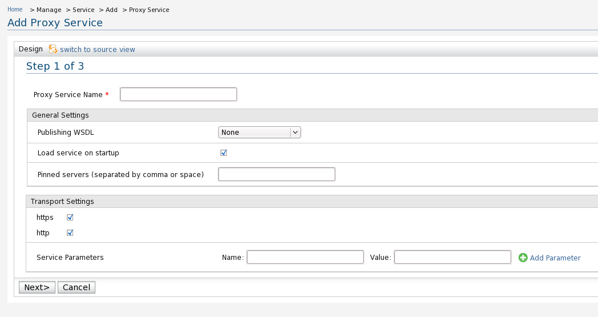
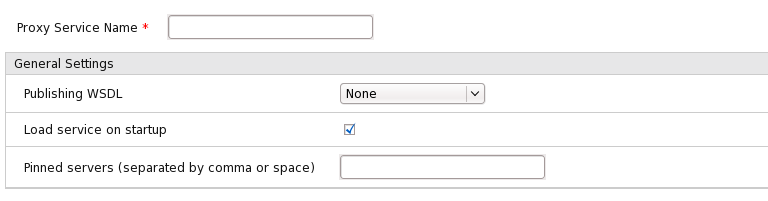
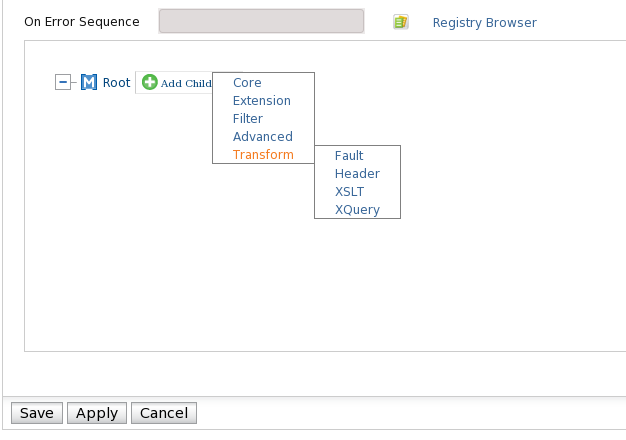
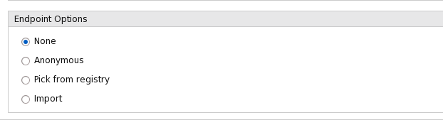
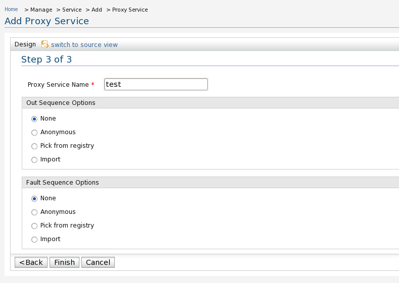
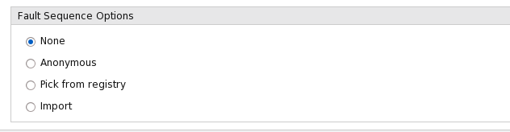

Custom Proxy Services
Main Article
When you want to create a proxy service with customized attributes (sequences, endpoints,
transport settings, WSDL options, QoS settings) you will have to select the
Custom Proxy option from the Create Proxy Service from Template
page. This will launch the proxy service creation wizard which is a simple 3-step process
for setting up a fully functional proxy service tailored to meet your exact mediation
requirements. You can either use predefined sequences and endpoints in your proxy service,
select dynamic sequences and endpoints saved in the registry or create in-line sequences
and endpoints while creating the proxy service.
Also note that the same wizard is used to edit existing proxy services. You have the option
of first setting up a simple basic proxy service using one of the existing templates and
then editing it using the proxy service wizard to customize its attributes.
Proxy Service Creation Wizard
When creating a custom proxy service using the proxy service creation wizard
you will be first taken to the Add Proxy Service page shown
below.

Figure 1: Add Proxy Service
- At the Add Proxy Service page, you will see
the General and Transport tabs.
- Enter the details on the General tab. (Use the Publishing
WSDL option to specify a WSDL to be published along with the proxy service.
Pinned Servers option can be used to bind the proxy service to a subset of
ESB servers in a clustered ESB deployment.)

Figure 2: General Settings
Note: If the user configures WSO2 ESB with WSO2 Governance Registry and if he uploads all the required files as *.gar file (described in WSO2 GREG documentation),
he can provide only the base WSDL under 'WSDl options'.
There is no need to provide all required imported schemas as WSDL resources since ESB is able to resolve the imported resources using only the base WSDL.
Please note that for the above function user needs to uncomment the following lines @ synapse.properties file which is avilable in ESB_HOME/lib/core/WEB_INF/classes folder.
synapse.wsdl.resolver=org.wso2.carbon.mediation.initializer.RegistryWSDLLocator
synapse.schema.resolver=org.wso2.carbon.mediation.initializer.RegistryXmlSchemaURIResolver
- Next, enter the details on the Transport
tab.

Figure 3: Transport Options
- Enter the service parameters and click Add Parameter.
- Click Next.You'll be redirected to Insequence and endpoints.

Figure 4:In Sequence and endpoints options
- Click Next. The In-sequence
options are displayed.

Figure 5:In Sequence Options
- Select the in-sequence you want to add.
If you select Anonymous,you have to add the sequence.
Create your sequence using the Add Child option on the
Design Sequence page.

Figure 6: Adding Anonymous Sequence
- Click Save,to save the sequence.
- Go to the Endpoint options tab.

Figure 7: Endpoint Options
- Select the endpoint you want to add.
If you select Anonymous,you have to add the Endpoint.
On the Manage Endpoints page, select the
endpoint you want to add.
Add Out Sequence settings
- Click Next. The Out
Sequence and Fault
Sequece options are displayed.

Figure 8: End point options
- Select the out-sequence you want to add.
If you select Anonymous,you have to add the sequence
. Create your sequence using the Add Child option on the
Design Sequence page.

Figure 9: Out Sequencce options
Add Fault Sequence settings
- Go to the Fault-Sequence tab.

Figure 10: Fault Sequence options
- Select the fault-sequence you want to add.
If you select Anonymous,you have to add the sequence
. Create your sequence using the Add Child option on the
Design Sequence page.
- Click Finish.
You can view your service on the Deployed
Services page.